Project overview
A Monte Carlo path tracer
This project connects geometric visibility with light transport. Starting from a pixel on the image plane, the renderer generates camera rays, finds the nearest surface, and estimates the radiance arriving at the camera.
Part 1 establishes the camera model and ray–triangle and ray–sphere intersections. Part 2 organizes primitives in a bounding volume hierarchy so that a ray can reject whole groups of geometry. Parts 3 and 4 add diffuse reflection, direct-light estimators, and recursive indirect illumination. Part 5 allocates a different number of samples to each pixel according to an estimated convergence criterion.
The most useful lesson was that correct geometry, efficient traversal, and low-variance sampling solve different problems. BVH acceleration reduces the cost of finding a hit; importance sampling makes lighting samples more useful; adaptive sampling avoids spending the full sample budget on already-stable pixels. Debugging also exposed the importance of small invariants: a direction must be normalized as a vector, the valid ray interval must have its near bound before its far bound, and accumulated color must be averaged only after sampling finishes.

Part 01
Part 1: Ray Generation and Scene Intersection
From a pixel to a world-space ray
For each pixel (x, y), raytrace_pixel() draws a random offset inside the unit square. Adding that offset to the pixel origin and dividing by the image width and height gives normalized image coordinates (u, v). The camera looks along its local negative z-axis. A sample on the canonical image plane at z = −1 therefore defines the camera-space direction below, with the field-of-view angles converted from degrees to radians.
Multiplying by c2w rotates this direction into world space; normalizing the resulting vector gives the ray direction. The ray origin is the camera position. We initialize min_t = nClip and max_t = fClip, and initialize the camera ray's depth from max_ray_depth before estimating radiance. A valid intersection must lie inside this interval. After a closer hit is found, its distance replaces max_t, preventing a later, farther surface from overwriting the nearest hit.
Each sample returns an RGB radiance estimate. We accumulate these estimates and divide by the actual number of samples at the end. The intersection record carries the distance, shading normal, primitive pointer, and BSDF pointer, so the next stage knows both where the ray hit and how that surface scatters light.
Ray–triangle intersection
The Möller–Trumbore calculation solves for the same point in two forms: a point along the ray and a barycentric combination of the triangle vertices. With e₁ = p₂ − p₁ and e₂ = p₃ − p₁, the unknowns are the ray parameter t and two barycentric coordinates u and v.
We first compute pvec = cross(D, e2) and det = dot(e1, pvec). If abs(det) < 1e-8, the ray is parallel or the triangle is degenerate, so we reject the test. Otherwise, the dot and cross products give u, v, and t. The sign of the determinant is not used to discard back-facing triangles. The candidate is accepted only when it satisfies both the barycentric bounds and the ray interval:
The weights of the three vertices are 1 − u − v, u, and v. We interpolate the vertex normals using those weights and normalize the result. This produces a smoothly varying shading normal rather than one constant normal for the whole triangle.
Ray–sphere intersection
For a sphere centered at C with radius R, substituting the ray into the sphere equation gives a quadratic. Let oc = O − C, a = D · D, h = D · oc, and c = oc · oc − R². The reduced discriminant is Δ = h² − ac; when it is nonnegative, the two roots are:
We select the smaller root inside the valid ray interval, falling back to the larger root if necessary. This also handles rays that start inside a sphere. At the accepted hit point P, the outward normal is normalize(P − C). As with triangles, both intersection functions update the ray's upper bound, while intersect() additionally records surface information.
Ray-generation and primitive-intersection results
The first pair below visualizes camera-ray directions before geometric shading; it should not show recognizable objects. The second pair shows actual normal-shaded geometry after the intersection routines are implemented.
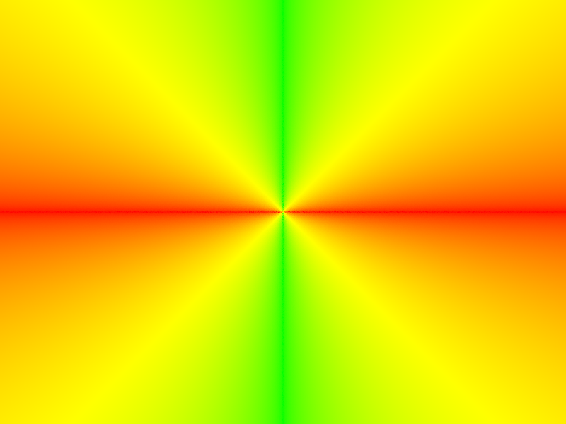
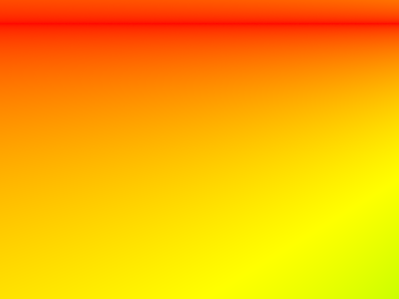


Two bugs were especially informative during this stage. Using norm() as though it returned a normalized vector discarded directional information; using normalize() fixed that. Reversing min_t and max_t made the valid interval empty and rejected every intersection. A temporary hit/miss color test separated that visibility problem from a lighting problem.
Part 02
Part 2: Bounding Volume Hierarchy
Recursive construction and splitting heuristic
construct_bvh(start, end, max_leaf_size) operates on a half-open range of primitive pointers. It returns null for an empty range and expands a bounding box around every primitive in the range. If end − start ≤ max_leaf_size, the node becomes a leaf and stores the two iterators. Otherwise, it becomes an internal node with two recursively constructed children.
The implemented axis rule uses the longest component of bbox.extent, the bounding box of the complete primitives. The split position is the arithmetic mean of the primitive bounding-box centroids on that axis:
std::partition() moves primitives with centroid coordinate smaller than s to the left range and the rest to the right. If the partition leaves one side empty, the fallback is mid = start + N / 2. This splits the current ordering by count and ensures progress for a positive leaf-size limit; it is not a median sort. Although the code also computes centroid_bbox, that box is not used to choose the axis in this implementation. The method is inexpensive and spatially motivated, but it does not guarantee a balanced tree or the minimum possible traversal cost.
Bounding-box tests and traversal
The slab test asks when a ray lies between the two box planes on each axis. The smaller and larger plane-intersection parameters form an interval for that axis; the three intervals are intersected with the ray's valid interval. There is a box hit only if the resulting entry parameter is no greater than the exit parameter. A direction component of zero must be treated as a parallel-axis case rather than blindly dividing by zero.
texit = min(max_t, tx,far, ty,far, tz,far)
In the supplied traversal code, a failed node-box test immediately discards the entire subtree. At a leaf, the renderer checks the stored primitives. has_intersection() can return on the first hit, which is sufficient for visibility queries. intersect() must instead find the closest hit: it tests the left child and then the right child, using the updated ray.max_t to reject farther candidates. The primitive call appears before the existing hit flag in primitive->intersect(...) || hit, so an earlier hit does not short-circuit the remaining primitive tests.
Large scenes rendered with BVH acceleration
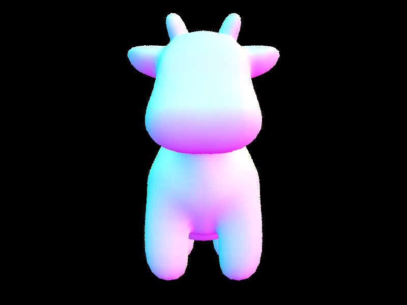
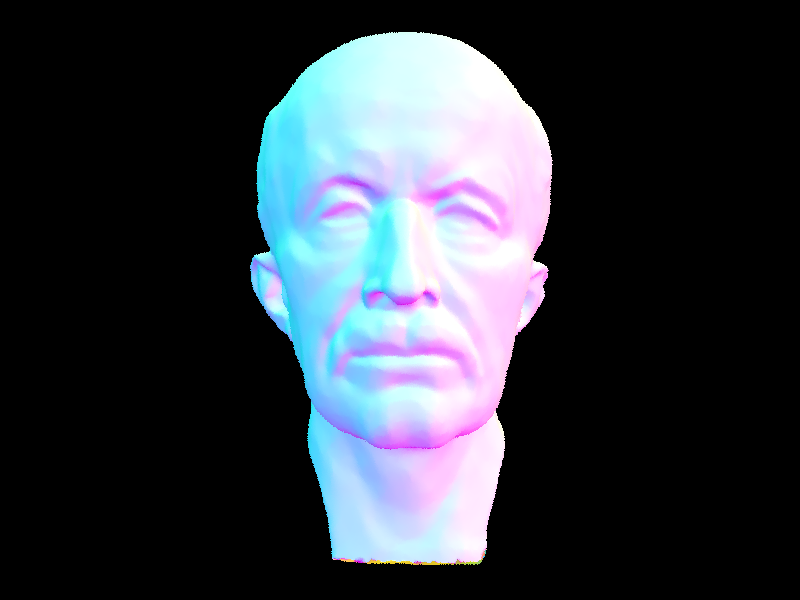
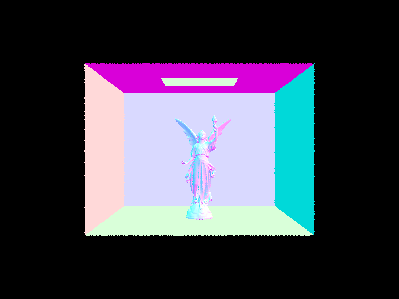
Rendering-time comparison
The following values are transcribed from the supplied default_render_speed and optimal_render_speed terminal captures. We report the renderer's Rendering…100% duration, not scene-loading time, BVH-construction time, or the runtime of the whole process. All six captures report eight rendering threads.
| Scene | Primitives | Without BVH (s) | With BVH (s) | Observed ratio |
|---|---|---|---|---|
| Cow | 5,856 | 17.8826 | 0.0473 | 378.07× |
| Max Planck | 50,801 | 439.6537 | 0.0581 | 7,567.19× |
| CBlucy | 133,796 | 738.1741 | 0.0483 | 15,283.11× |
The recorded baseline grows from 17.8826 seconds for Cow to 738.1741 seconds for CBlucy, whereas the accelerated runs remain below 0.06 seconds. This is consistent with BVH pruning: instead of testing a ray against the full primitive collection, the renderer rejects boxes that cannot contain a hit and descends only into relevant subtrees. Scene layout and box overlap also matter, so runtime need not increase monotonically with primitive count. The extra construction cost is small in these logs: the accelerated builds take 0.0024, 0.0216, and 0.0686 seconds, respectively. These are separate from the rendering times used in the ratios.
Part 03
Part 3: Direct Illumination
Direct illumination evaluates light that travels from a source to one reflecting surface and then to the camera. The diffuse BSDF is ρ/π, where ρ is the RGB reflectance. Directly visible emission is a separate, zero-bounce term.
Uniform-hemisphere estimator
At a surface hit, a local frame places the normal along +z. We sample an incoming direction uniformly over that hemisphere, transform it to world space, and trace a ray from the hit point with a small positive lower bound. Only the emission of the first surface reached contributes to this direct-light estimate: a non-emissive blocker contributes zero. In the local frame, the BSDF is evaluated with the incoming and outgoing directions, and the cosine factor is the incoming direction's z component.
The division by the sampling density and by the sample count is essential: adding more samples should reduce noise rather than increase expected brightness. Uniform directions are often inefficient for a small ceiling light because most directions hit a wall or the object rather than an emitter.
Light-importance estimator
Light sampling chooses a point or direction on each light directly. A light sample supplies incoming radiance, direction, distance, and a probability density. The direction is converted to the local shading frame; samples below the surface are rejected. A shadow ray tests visibility only up to the sampled light distance, using epsilon bounds so that neither the originating surface nor the light itself is mistaken for a blocker. An unoccluded sample contributes the BSDF times incoming radiance times the cosine, divided by the returned PDF. Samples are averaged for each light, and the per-light estimates are summed. Delta lights need only one sample per shading query.
Uniform hemisphere sampling: 1, 4, 16, and 64 light rays
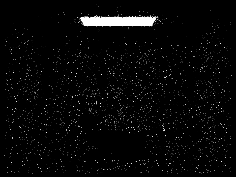
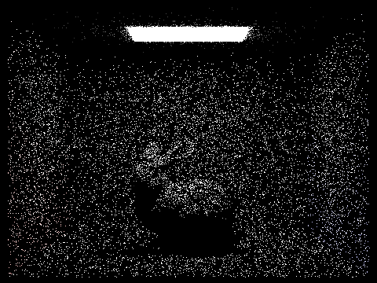
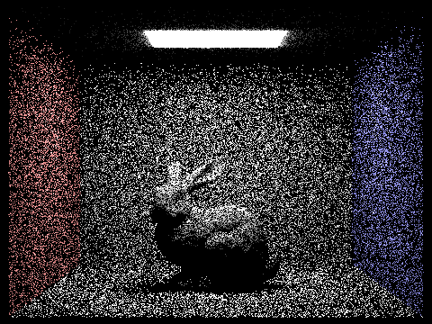
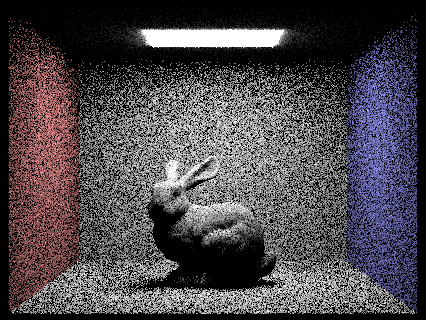
Light importance sampling: soft-shadow comparison
With one light sample, the floor near the bunny's contact shadow contains a conspicuous mixture of dark and bright samples: a sampled point on the area light is either visible or blocked. At four samples, the soft-shadow transition is easier to recognize, though the floor and bunny remain grainy. Sixteen samples make the penumbra more continuous, and sixty-four produce the cleanest direct-light result in this sequence. The shadow boundary is especially sensitive because different parts of the area light have different visibility. Increasing -l reduces this lighting uncertainty but does not increase the single camera sample used to resolve a geometric silhouette.
At the same listed light-sample count, importance sampling is visibly less noisy than uniform-hemisphere sampling. The one-ray hemisphere result is mostly black with isolated bright points because very few directions reach the light. Its 64-ray result still has widespread noise on the walls and floor. By aiming samples at the emitter, light importance sampling spends a much larger fraction of its work on potentially nonzero contributions, so the room is already recognizable at one light sample and becomes smooth much sooner. This is a variance advantage, not a change in the intended lighting model.
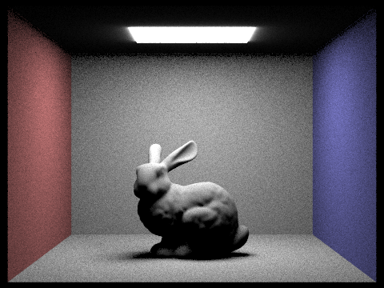
Part 04
Part 4: Global Illumination
Indirect-light estimator and recursive paths
Indirect illumination allows the next point along a sampled path to be another reflecting surface rather than a light. The diffuse BSDF sampler draws a cosine-weighted local direction with density p(ω) = cos θ / π and returns the BSDF value. After transforming the direction to world space, a secondary ray begins at the hit point with an epsilon lower bound and one less unit of depth. If it reaches another surface, recursive radiance is multiplied by the scattering weight below.
For a diffuse surface, the cosine-weighted PDF cancels the cosine in the numerator and the π in ρ/π, leaving the reflectance as the continuation weight before any roulette correction. Accumulated rendering adds the direct-light term at each visited surface, while exact-bounce rendering selects only the requested order of reflection. The camera-ray depth is initialized from max_ray_depth; the recursion reduces that budget rather than resetting it. Directly visible emission is handled as the zero-bounce term, and light paths must not be counted twice through both explicit light sampling and a duplicate emission contribution.
Global illumination results
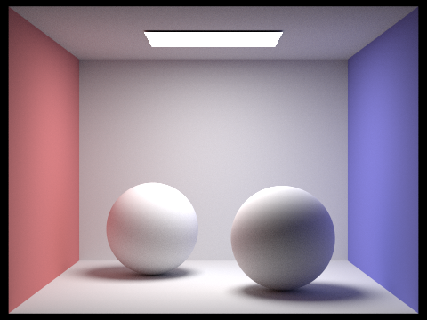

The ceilings and shadowed object surfaces are no longer uniformly black. The left wall contributes a reddish tint to nearby surfaces, while the blue wall influences the right side of the scene. The bunny's shaded front and the lower parts of the spheres remain visible because light can reach them after reflecting from the floor and walls. The result preserves the contact shadows while adding illumination that a direct-only estimator cannot supply.
Direct and indirect illumination
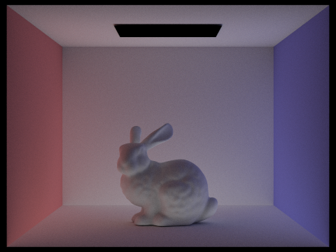

The direct-only view establishes the main form of the bunny, the bright floor, and the shadow cast by the area light. Its ceiling and the bunny's occluded surfaces remain dark. The indirect-only view has a black emitter but shows reflected illumination on the ceiling and the shaded bunny; the red and blue wall influence is particularly apparent there. Combining both components gives bright directly lit surfaces together with softer illumination in occluded regions. These components combine in linear radiance before display mapping, so adding the displayed PNG pixel values is not the appropriate numerical reconstruction test.
Exact bounce of light
With isAccumBounces = false, each image isolates the requested surface-reflection order. The zero-bounce view contains directly visible emission; higher-order surface contributions show how light is redistributed rather than repeatedly adding the entire lower-depth image.
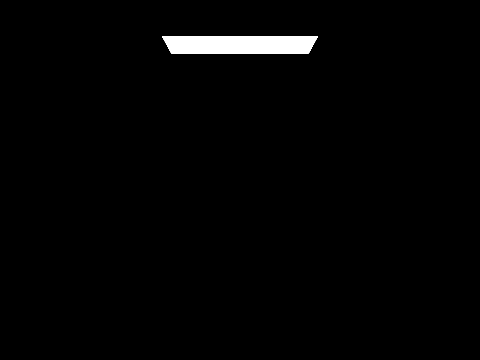
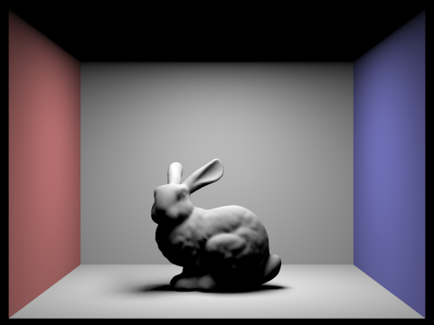
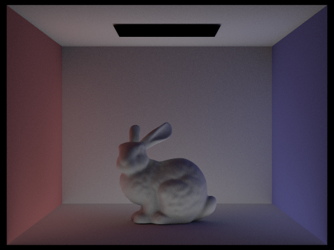
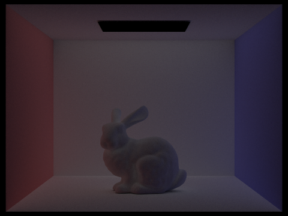
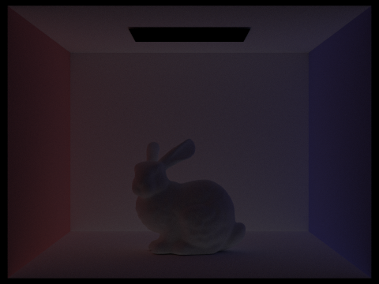
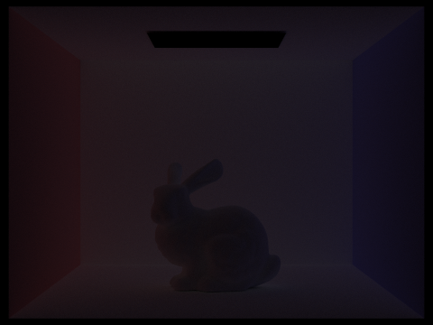
The second-bounce image makes the ceiling and the bunny's previously shadowed side visible. A representative two-reflection path is light → wall or floor → bunny → camera. Because those intermediate surfaces have different reflectances, the reflected illumination carries a color tint. The third-bounce view is dimmer and more diffuse: another reflection spreads light into additional regions but also attenuates it. Fourth- and fifth-order images become progressively weaker. Compared with a basic direct-lit rasterization pipeline, these paths account for interreflection and color bleeding instead of approximating all hidden illumination with a uniform ambient term. Rasterization can incorporate additional global-illumination techniques, but those effects are not supplied by direct shading alone.
Accumulated bounces of light
With isAccumBounces = true, the renderer includes all orders up to the depth limit. If L(k) denotes the contribution of order k, the accumulated result is:
| Depth | Exact-bounce view | Accumulated view |
|---|---|---|
| 0 | Only the emitter is visible. | The same zero-bounce scene. |
| 1 | Directly lit surfaces; visible emission is also retained in this supplied image. | Emission and direct lighting establish the room and bunny. |
| 2 | A strong first indirect component lights shaded surfaces. | The bunny and ceiling brighten substantially. |
| 3 | A weaker, more distributed indirect contribution. | Shadows fill further and reflected wall color becomes richer. |
| 4–5 | Each isolated higher-order contribution is comparatively dim. | Smaller refinements approach the depth-limited global result. |
The accumulated images approach a stable appearance because each additional reflection contributes a smaller amount of energy for these diffuse materials. The exact-bounce sequence becomes darker for the same reason. Finite Monte Carlo noise means individual pixels need not change perfectly monotonically even when the expected accumulated energy increases.
Russian Roulette termination
Russian Roulette avoids tracing every eligible path to its maximum depth. If a path survives with probability q, its continuation contribution is divided by q; otherwise, that continuation contributes zero. The expected continuation is preserved because q × (L/q) + (1 − q) × 0 = L. This corrects the random termination itself; a finite maximum depth still omits contributions beyond that cap.
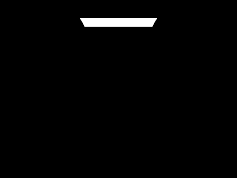

The m = 0 and m = 1 results show emission and direct lighting, respectively. At m = 2, indirect illumination produces the largest visual change. Increasing the limit to 3 and 4 refines the shaded bunny and the ceiling. The m = 100 image has a similar overall appearance to the lower-depth global images, with the remaining high-order illumination included more fully. A limit of 100 does not imply that every camera sample traces 100 reflections: many paths terminate earlier through roulette.
Samples per pixel
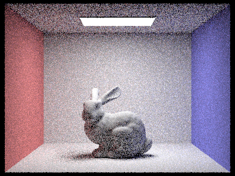
At 1–4 samples per pixel, the walls, ceiling, and bunny all contain strong grain. At 8 and 16 samples, the main lighting structure is stable but mottling remains on shaded surfaces. Sixty-four samples make the image noticeably smoother, and 1024 provide the cleanest view in this series. The occluded bunny, contact-shadow region, and ceiling converge more slowly than bright, directly illuminated surfaces because their estimates depend more heavily on variable indirect paths. More samples average those fluctuations; they do not add a new lighting effect or increase the maximum number of reflections.
Part 05
Part 5: Adaptive Sampling
Per-pixel convergence test
Fixed-rate sampling spends the same number of camera samples on every pixel, even when some estimates stabilize much earlier. The adaptive version keeps ns_aa as an upper bound and stops an individual pixel when its luminance estimate passes a relative-uncertainty test. The RGB sum still determines the final pixel color; luminance is used only to decide when to stop.
For each new radiance sample, illum() produces a scalar xk. We update the running sums s₁ and s₂ and increment the actual sample count n. Storing two sums avoids retaining the full sample history. The mean and sample variance are:
μ = s1 / n, σ2 = max(0, (s2 − s12/n) / (n − 1))
After every samplesPerBatch samples, provided n > 1, we compute the normal-approximation 95% confidence-interval half-width and compare it with a tolerance relative to the mean:
Clamping the estimated variance to zero prevents a tiny negative round-off result from entering the square root. The comparison must use maxTolerance * mean, not just maxTolerance, because the criterion is relative rather than absolute. When sampling stops, we divide the accumulated RGB value by n exactly once and write n to sampleCountBuffer. A fixed-rate comparison branch uses the same ray-generation and depth-initialization logic but takes all ns_aa samples. This statistical test is a practical stopping heuristic, not a proof that every pixel has reached a guaranteed error bound.
Render configuration and image pairs
The two scenes below each have a final rendering and its corresponding sampling-rate visualization. Both images in a pair come from adaptive rendering; the heatmap is not a separate non-adaptive render. Red indicates high sample usage relative to the configured maximum, blue indicates low usage, and intermediate colors show intermediate rates. [5]
| Setting | Value | Meaning |
|---|---|---|
| Maximum camera samples | -s 2048 | A cap per pixel, not a requirement to use all 2048 samples. |
| Adaptive check | -a 64 0.05 | Check every 64 samples using a 5% relative tolerance. |
| Light samples | -l 1 | One sample per light at each direct-light query. |
| Maximum depth | -m 5 | Depth budget for recursive light transport. |
| Resolution / threads | -r 480 360 -t 8 | 480 × 360 output with eight rendering threads. |
Scene 1: CBbunny
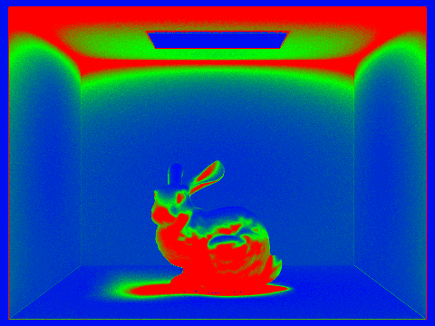
The back wall and much of the floor are blue, indicating that their estimates stabilized before exhausting the sample budget. Large parts of the bunny, the region near its contact shadow, and the ceiling are red or yellow. Those regions combine occlusion and indirect illumination, which produce more variable path contributions. The directly visible rectangular emitter is blue even though it is bright: stable emission can converge quickly. Thus the sampling pattern follows variance relative to mean brightness, not simply which surfaces are brightest or darkest.
Scene 2: CBspheres
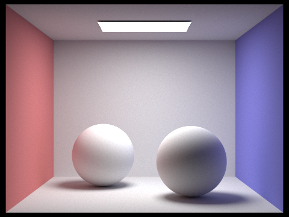
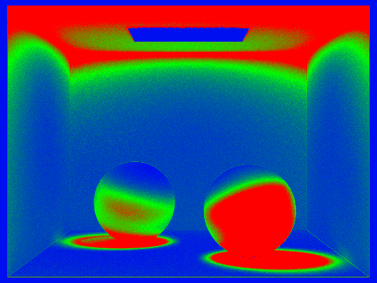
The upper, directly illuminated parts of the spheres use fewer samples than their shadowed lower regions. The right sphere has a broad red region facing the camera, and the contact-shadow areas on the floor also demand many samples. As in the bunny scene, the ceiling requires a higher sampling budget while the central back wall is mostly blue. Compared with the bunny's irregular red pattern, the smooth sphere geometry produces broader, more continuous bands of sample usage. Both pairs show why one fixed rate is inefficient: large smooth regions converge early while occluded surfaces continue sampling. No precise time saving is claimed here because a matched fixed-rate timing experiment is not included.
Commands for reproducing the Part 5 renders
./pathtracer -t 8 -s 2048 -a 64 0.05 -l 1 -m 5 -r 480 360 -f bunny.png ../dae/sky/CBbunny.dae
./pathtracer -t 8 -s 2048 -a 64 0.05 -l 1 -m 5 -r 480 360 -f spheres.png ../dae/sky/CBspheres_lambertian.daeWorking together
Partner Collaboration
We coordinated the project through separate Git branches. The work on Parts 3 and 4 was integrated from dai into prince, alongside the ray-generation, intersection, acceleration, and adaptive-sampling work. The shared pathtracer.cpp made the interfaces between tasks important: the pixel loop had to preserve the adaptive sample count and initialize the depth consumed by the lighting recursion. The integration and debugging process highlighted that a successful text merge does not by itself verify rendering behavior. Intermediate direction, hit/miss, and normal-shading outputs helped separate problems in camera rays and geometry from problems in light transport.
Disclosure
Acknowledgement of AI
We used ChatGPT for conceptual explanations, C++ implementation suggestions, code review, debugging, Git workflow guidance, and help interpreting the write-up requirements. Assistance covered camera-ray normalization and clipping bounds, triangle and sphere intersections, BVH construction and traversal concepts, and the adaptive-sampling statistics and stopping condition. ChatGPT also helped draft and edit this report, match supplied images with captions, and transcribe timing data from the supplied terminal captures. The illustrations and render results shown here were supplied as project assets; AI did not generate replacement rendering results or run the path tracer to produce new experimental measurements.
Evidence appendix
Recorded Outputs and Supporting Files
The captures below are retained as evidence for the Part 2 timing table. They are terminal records, not substitutes for the renderer-exported scene images above. Click any image in the report to view the original file at its native resolution.
Cow: baseline and BVH timing captures
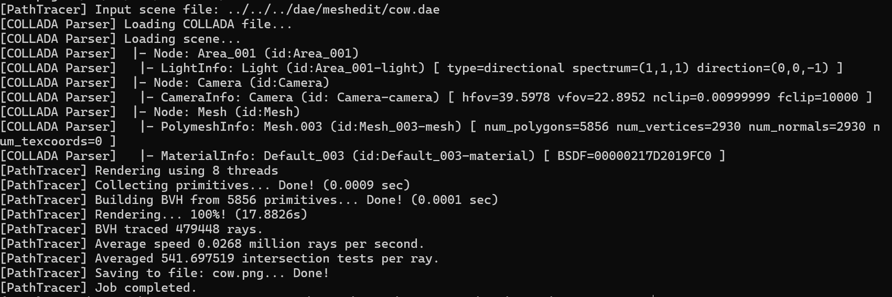
cow_default_render_speed.png.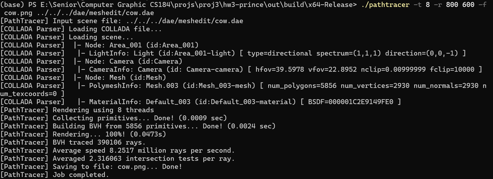
cow_optimal_render_speed.png.Max Planck: baseline and BVH timing captures
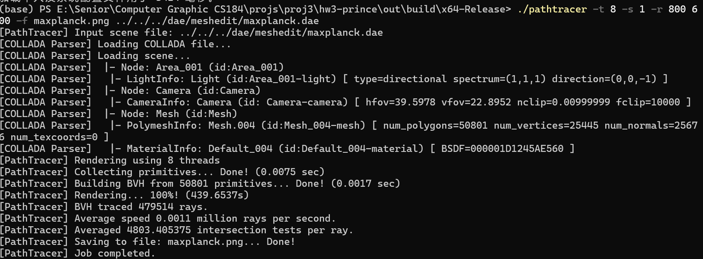
maxplanck_default_render_speed.png.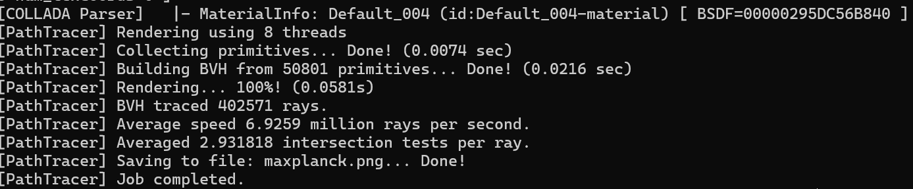
maxPlanck_optimal_render_speed.png.CBlucy: baseline and BVH timing captures
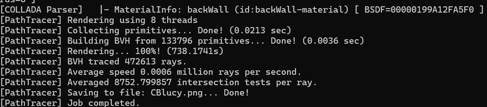
CBlucy_default_render_speed.png.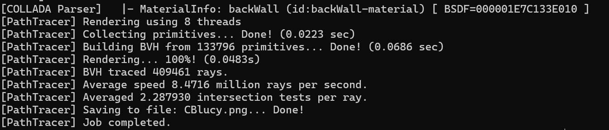
CBlucy_optimal_render_speed.png.Part 3 sampling-rate diagnostics
All nine supplied Part 3 rate maps are uniformly red. They indicate full reported sample usage in those output buffers and contain no spatially varying adaptive pattern. They are paired below with their corresponding render filenames and are kept separate from the Part 5 convergence results.


hemisphere_1.png.

hemisphere_4.png.

hemisphere_16.png.

hemisphere_64.png.

hemisphere_64_32.png.

importance_1.png.

importance_4.png.
importance_16.png.

importance_64.png.Course references
References and Report Scope
[1] CS184/284A. Part 1: Ray Generation and Scene Intersection.
[2] CS184/284A. Part 2: Bounding Volume Hierarchy.
[3] CS184/284A. Part 3: Direct Illumination.
[4] CS184/284A. Part 4: Global Illumination.
[5] CS184/284A. Part 5: Adaptive Sampling.
[6] CS184/284A. Homework 3 Deliverables and Write-Up Rubric.